logo
logo principal :
Utilisation sur fond clair


logo secondaire :
Utilisation sur fond sombre


Ce projet est celui d'Isabelle qui, suite à des bouleversements dans sa vie et des prises de conscience, s’est décidée à partager son expérience pour aider les gens sur les difficultés qu’ils éprouvent dans leurs vies. Isabelle a donc créer Igerie, une plateforme en ligne ou elle propose des séances de coaching et fait la promotion de son livre. Son site ébèrge également de la ressource en ligne gratuite sur la santé mentale et les reflexions d'Isabelle.
logo principal :
Utilisation sur fond clair
logo secondaire :
Utilisation sur fond sombre
Des mockups pour présenter sur différents support le logo.